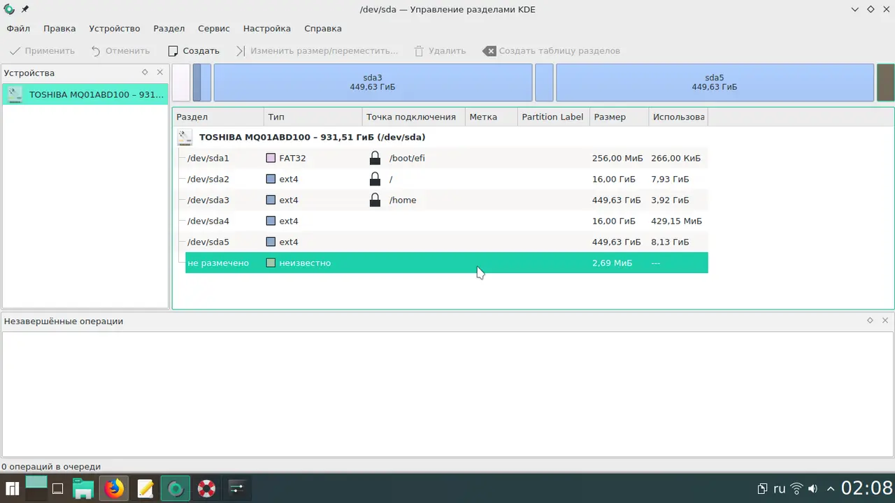
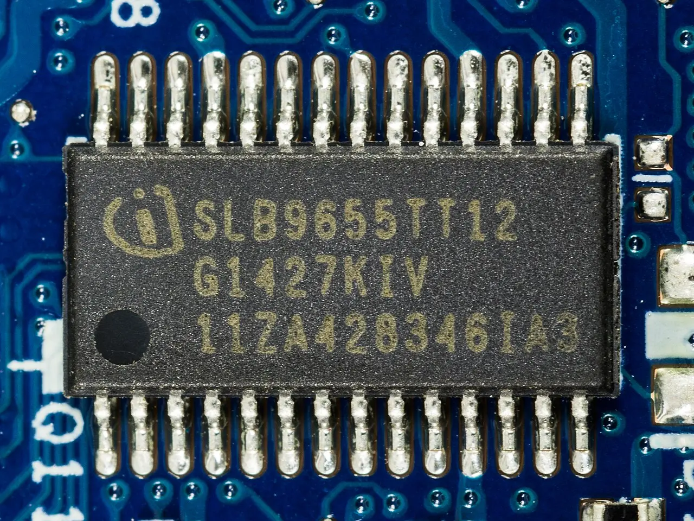
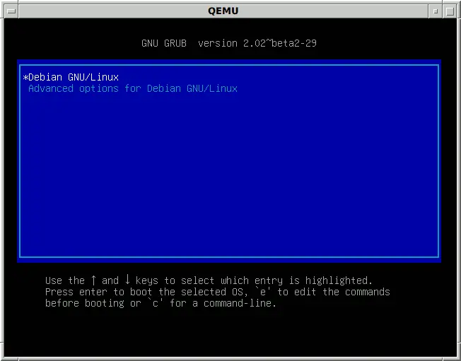

Dual-boot
without wrecking
Windows
Put Linux on a second physical disk, give it its own ESP on that disk, and switch OSes from the firmware boot menu (F12) rather than a shared boot loader. This is the only layout where "undo" means "unplug a drive."
Leave Secure Boot ON and pick a shim-signed distro. Turning it off in 2026 costs you Windows Hello and a BitLocker recovery prompt, and buys you almost nothing [1] [4].
powercfg /H off, then a full shutdown — not a reboot.Suspend-BitLocker -MountPoint "C:" — suspend, never decrypt.Pick the airframe before you pick the procedure. Everything downstream changes.
Second physical disk

Shrink Windows on one disk

ArchWiki's ESP page: a separate ESP per OS is the recommended mitigation for the hibernation problem, and "most UEFIs support this as long as the ESPs reside on physically different disks" [7].
ArchWiki's dual-boot page and Microsoft: "An additional EFI system partition should not be created, as it may prevent Windows from booting" [1] [2].
Reading: Microsoft's warning is about two Windows installs. A Linux ESP on a second disk is the common working configuration — but it is firmware-dependent. Install it, then immediately verify Windows still boots from a cold start and from the F12 menu. If your firmware only ever boots one ESP, fall back to Linux's loader in Windows' 100 MiB ESP and accept that you must then fully shut down Windows, never hibernate [7].
There is only one ESP per drive. Hibernating Windows and still booting Linux therefore requires two physical disks. No exceptions [1].
Physically disconnect the Windows drive while installing Linux. The installer then cannot write boot files to the Windows ESP even if you misclick, and the Linux disk is guaranteed self-contained and bootable on its own [6]. Separate drives also sidestep OEM recovery partitions and vendor RAID/Intel RST setups that confuse installers, and let you move the Linux drive to another machine later [5].
All of this happens while Windows is still the only OS on the machine. None of it is destructive.
powercfg /H off — then shut down. A reboot does not clear the flag [1].Suspend-BitLocker -MountPoint "C:" keeps the volume encrypted but wraps the volume master key with a clear key; on resume it reseals to the new measurements without ever asking for the recovery key [3]. Microsoft recommends exactly this for planned firmware/hardware changes. It auto-resumes on the next reboot unless you pass -RebootCount [12].cp -a it from a live USB. Cheapest insurance you will ever buy.pagefile.sys, hiberfil.sys, and System Volume Information [10]. Disable hibernation, disable the page file, turn off System Protection, defragment, shrink, re-enable. GParted often shrinks further — but not on a BitLocker-encrypted volume; Windows can resize an encrypted C:, Linux tools cannot [1].Windows writes the kernel session to disk and leaves NTFS volumes flagged in-use. Boot Linux, mount them read-write, and Windows restores a stale image over your changes — "anything from a couple of lost files to entire directories being corrupted" [8] [9]. The same applies to a shared ESP: hibernate Windows, boot Linux, and the ESP itself can be damaged [1].
The safety nets are asymmetric. ntfs-3g refuses read-write mounts of a hibernated NTFS volume. The in-kernel NTFS driver has no such safeguard [1].
⚠ Windows updates have been reported to re-enable Fast Startup. Re-check after every feature update [1].
systemd-cryptenroll --tpm2-pcrs=7: then a Secure Boot key change breaks both unlocks at once [15]. For a first Linux trial, a passphrase is the lower-drama choice.Four things that bite dual-booters. Three of them are Windows-side.
⚠ The PCR 7 trap
Modern BitLocker binds to PCR 7 (Secure Boot state) + PCR 11, which tolerates firmware and boot-component churn. But "BitLocker can be prevented from binding to PCR 7 if a non-Windows OS booted prior to Windows, or if Secure Boot isn't available" [3]. Fall back to the PCR 0/2/4 profile and every BIOS update becomes a recovery prompt.
→ Don't turn Secure Boot off, and don't re-enable BitLocker while Linux is the default boot entry.
⚠ Secure Boot off = Windows Hello gone
Disabling it makes a TPM-sealed BitLocker volume show the recovery screen at every Windows boot [14] — reversible. It also makes Windows disable every Windows Hello method — PIN, face, fingerprint, security key — across all accounts. Re-enabling Secure Boot does not restore them, and you need the actual account password to get back in [1].
→ In 2026 disabling Secure Boot is not a reasonable trade.
⚠ Windows resets the boot order
Boot Windows once and Windows Boot Manager is back on top at the next start; efibootmgr reordering does not stick on some boards, and some firmware overrides it outright whenever it detects Windows [19] [22]. Related: if firmware boots the fallback path \EFI\BOOT\BOOTx64.EFI, that file may already have been overwritten with the Windows loader.
→ Fixes by increasing intrusiveness: use F12 every time (zero maintenance); bcdedit /set "{bootmgr}" path "\EFI\<path>\<app>.efi" to chain from Windows; or a Windows startup task running bcdedit /set "{fwbootmgr}" DEFAULT "{id}" [19].
⚠ Windows updates revoke your bootloader
August 2024's KB applied an SBAT revocation intended for old vulnerable shims. Microsoft's "dual-boot detection did not detect some customized methods of dual-booting and applied the SBAT value when it should not have been applied", leaving Verifying shim SBAT data failed: Security Policy Violation [18].
→ The strongest argument for Config A: a revocation still hits you, but nothing Windows does can corrupt an ESP it never mounts.

Microsoft's 2011 Secure Boot certificates are aging out on a published schedule [4].
| Expiring certificate | Expires | Replacement |
|---|---|---|
| Microsoft Corporation KEK CA 2011 | 24 Jun 2026 | Microsoft Corporation KEK 2K CA 2023 |
| Microsoft UEFI CA 2011 (third-party / shim) | 27 Jun 2026 | Microsoft UEFI CA 2023 |
| Microsoft Windows Production PCA 2011 | 19 Oct 2026 | Windows UEFI CA 2023 |
Expiry stops Microsoft signing new boot components; it does not revoke what your firmware already trusts. Microsoft: "Devices that haven't received the newer 2023 certificates will continue to start and operate normally" [4]. Red Hat's guidance to Linux users matches — "a shim signed by this key will continue to boot as long as the public certificate is not removed" [16].
Two action items: let Windows Update or fwupd push the 2023 certs into your firmware db — and ⚠ do not remove the 2011 certificate afterwards, because current shims are dual-signed against both [16].
insmod or modprobe fails" [17]. Ubuntu automates it — DKMS generates a machine-specific Machine Owner Key, signs the module, and prompts you once at the blue MOK-enrollment screen on the next reboot. It's one extra reboot, not a project.| Approach | Windows ESP touched | Secure Boot out of box | Blast radius when it breaks |
|---|---|---|---|
| Firmware boot menu only own ESP per disk, no cross-registration |
✗ never | Depends on distro | Lowest — each OS boots independently; the other disk is unaffected |
| systemd-boot | ✓ if sharing ESP | ✗ sign your own | Low — minimal UEFI-only design; auto-detects Windows Boot Manager [20]. Recommended over GRUB/rEFInd on loosely spec-compliant firmware [21] |
| GRUB via shim Ubuntu / Fedora default |
✓ | ✓ | Medium — the most-tested path, but the one the 2024 SBAT incident bricked [18] |
| rEFInd | ✓ | ✗ sign your own | Low–medium — auto-detects everything including Windows Boot Manager [1] |

Use a dedicated third partition (or the leftovers of the Linux disk). Never C:, and never point Linux at the Windows system volume for read-write work while Fast Startup exists on the machine [8].
| NTFS | exFAT | |
|---|---|---|
| Journaling | ✓ | ✗ |
| Linux driver churn | 3 drivers, ongoing [25] [26] | Stable in-kernel exfat |
| POSIX permissions / exec bit / symlinks | ✗ uid/gid fixed at mount | ✗ [29] |
| Hibernation dirty-flag hazard | ✓ present | Lower, but still a shared-mount hazard [9] |
ntfs, formerly NTFSPLUS, merged for Linux 7.1 [25] [26]. Arch's verdict: "There is no objectively better driver at the moment"; the new ntfs is slightly faster but has no Windows native symlinks yet (planned for 7.2). Userspace ntfs-3g is slower but is still what conservative reviewers recommend for bulk data [27] — and the only one of the three that refuses to read-write mount a hibernated volume [1].volume is dirty and "force" flag is not set! with ntfs3 after an unclean Windows shutdown [25].Neither filesystem stores POSIX permissions, so everything is owned by whatever uid/gid you set in fstab and the executable bit is gone [29]. git init itself fails on NTFS mounts because git chmods files inside .git/ and the driver returns an error [28].
For a .NET/TypeScript workstation this is fatal in practice — mode bits in the index, node_modules symlinks, and dotnet build outputs all depend on things NTFS does not carry.
→ Keep repos on ext4/btrfs on the Linux side and on NTFS on the Windows side. Let the shared partition hold data, not code; symlink individual data directories out of $HOME into it if you want the convenience.
grub rescue> prompt and no OS.- Boot Windows. Confirm it boots without the Linux loader — F12 → Windows Boot Manager directly.
- Restore the Windows boot path if Linux owns it:
bcdboot C:\Windows /s <ESP> /f UEFI[1] diskmgmt.msc→ delete each Linux volume → the space becomes Unallocated → Extend Volume on the adjacent Windows partition [24]- Delete the leftover
\EFI\<distro>directory from the ESP (mountvola letter to it) and drop the stale firmware entry withbcdedit,efibootmgrfrom a live session, or EasyUEFI [24] - Resume BitLocker.
Recovery card
Shift+F10 in Setup gives you a console with diskpart and bcdboot [1]. Note: Windows RE started manually from repair media requires the BitLocker recovery key to unlock the drive [12].
Printed, or on a phone. The pre-boot recovery screen needs it typed with the function keys [3].
A small FAT32 filesystem. cp -a it to external storage from a live USB. Cheapest insurance you will ever buy.
Boot-Repair "generally reinstalls GRUB and restores access to the operating systems you had installed before the issue", and produces a Boot-Info report you can paste into a forum before letting it change anything [23].
▸ Open the reference appendix

Part of Testing the waters: a staged, reversible path from a Windows dev workstation to Linux — where the recommended route skips dual-boot entirely in favour of an external NVMe.
A rung-by-rung ladder from WSL2 to full switch, with what each rung proves, what it structurally hides, the go/no-go signal, and the cost of retreating.
WSL2 retires every userland risk in a Linux migration and none of the machine-ownership risks; here is where the line falls in 2026.
Live USB first (€10, 15 minutes, proves your actual hardware), then a full install on an external NVMe SSD (€90–150) — everything else is a detour.
One source of truth per asset class, replicated by a tool that knows the OS difference — never a shared partition and never two hand-edited copies.
The official Linux client now supports btrfs/zfs/xfs, but you cannot share one Dropbox folder between a Windows and a Linux install, and code repos do not belong in Dropbox at all.
A fill-in blocker inventory plus tickable go/no-go criteria and a pre-committed rollback date for a Windows-to-Linux workstation trial.